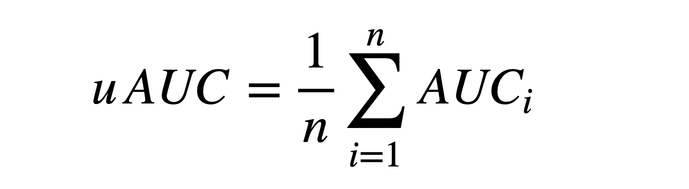
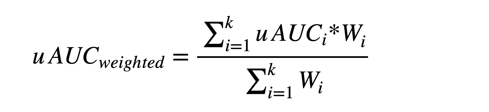

本次比赛基于脱敏和采样后的数据信息，对于给定的一定数量到访过微信视频号“热门推荐”的用户，根据这些用户在视频号内的历史n天的行为数据，通过算法在测试集上预测出这些用户对于不同视频内容的互动行为（包括点赞、点击头像、收藏、转发等）的发生概率。本次比赛以多个行为预测结果的加权uAUC值进行评分。
附件：赛题描述——微信视频号推荐算法
一、竞赛数据
比赛提供训练集用于训练模型，测试集用于评估模型效果，提交结果demo文件用于展示提交结果的格式。所有数据文件格式都是带表头的.csv格式，不同字段列之间用英文逗号分隔。初赛与复赛的数据分布一致，数据规模不同。初赛提供百万级训练数据，复赛提供千万级训练数据。
1. 训练集
（1） Feed信息表
该数据包含了视频（简称为feed）的基本信息和文本、音频、视频等多模态特征。具体字段如下：
| 字段名 | 类型 | 说明 | 备注 |
|---|---|---|---|
| feedid | String | Feed视频ID | 已脱敏 |
| authorid | String | 视频号作者ID | 已脱敏 |
| videoplayseconds | Int | Feed时长 | 单位：秒 |
| description | String | Feed配文，以词为单位使用空格分隔 | 已脱敏；存在空值 |
| ocr | String | 图像识别信息，以词为单位使用空格分隔 | 已脱敏；存在空值 |
| asr | String | 语音识别信息，以词为单位使用空格分隔 | 已脱敏；存在空值 |
| description_char | String | Feed配文，以字为单位使用空格分隔 | 已脱敏；存在空值 |
| ocr_char | String | 图像识别信息，以字为单位使用空格分隔 | 已脱敏；存在空值 |
| asr_char | String | 语音识别信息，以字为单位使用空格分隔 | 已脱敏；存在空值 |
| bgm_song_id | Int | 背景音乐ID | 已脱敏；存在空值 |
| bgm_singer_id | Int | 背景音乐歌手ID | 已脱敏；存在空值 |
| manual_keyword_list | String | 人工标注的关键词，多个关键词使用英文分号”;”分隔 | 已脱敏；存在空值 |
| machine_keyword_list | String | 机器标注的关键词，多个关键词使用英文分号”;”分隔 | 已脱敏；存在空值 |
| manual_tag_list | String | 人工标注的分类标签，多个标签使用英文分号”;”分隔 | 已脱敏；存在空值 |
| machine_tag_list | String | 机器标注的分类标签，多个标签使用英文分号”;”分隔 | 已脱敏；存在空值 |
| feed_embedding | String | 融合了ocr、asr、图像、文字的多模态的内容理解特征向量 | 512维向量 |
说明
- 训练集和测试集涉及的feed均在此表中；
- description, orc, asr三个字段为原始文本数据以词为单位使用空格分隔和脱敏处理后得到的。例如：文本“我参加了中国高校计算机大赛“经过处理后得到类似“2 32 100 25 12 89 27”的形式（此处只是一个样例，不代表实际脱敏结果）。此外，我们还提供了以字为单位使用空格分隔和脱敏的结果，对应的字段分别为description_char、ocr_char、asr_char。
- machine_tag_list字段比manual_tag_list字段增加了每个标签对应的预测概率值（取值区间[0,1]）。脱敏后的标签和概率值之间用空格分隔。例如：“1025 0.32657512;2034 0.87653981;35 0.47265462”。
- manual_keyword_list和machine_keyword_list共享相同的脱敏映射表。如果原先两个字段都包含同个关键词，那么脱敏后两个字段都会包含同个id。
- manual_tag_list和machine_tag_list共享相同的脱敏映射表。如果原先两个字段都包含同个分类标签，那么脱敏后两个字段都会包含同个id。
- feed_embedding字段为String格式，包含512维，数值之间用空格分隔。
（2） 用户行为表
该数据包含了用户在视频号内一段时间内的历史行为数据（包括停留时长、播放时长和各项互动数据）。具体字段如下：
| 字段名 | 类型 | 说明 | 备注 |
|---|---|---|---|
| userid | String | 用户ID | 已脱敏 |
| feedid | String | Feed视频ID | 已脱敏 |
| device | Int | 设备类型ID | 已脱敏 |
| date_ | Int | 日期 | 已脱敏为1-n，n代表第n天 |
| play | Int | 视频播放时长 | 单位：毫秒；若播放时长大于视频时长，则属于重播的情况 |
| stay | Int | 用户停留时长 | 单位：毫秒 |
| read_comment | Bool | 是否查看评论 | 取值{0, 1}，0代表“否”，1代表“是” |
| like | 是否点赞 | ||
| click_avatar | 是否点击头像 | ||
| favorite | 是否收藏 | ||
| forward | 是否转发 | ||
| comment | 是否发表评论 | ||
| follow | 是否关注 |
说明
- 用户行为表中每个用户对应的数据已按照时间戳顺序由小到大排列，数据中不提供时间戳字段。
2. 测试集
比赛A/B榜的数据量和数据分布一致。具体字段如下：
| 字段名 | 类型 | 说明 | 备注 |
|---|---|---|---|
| userid | String | 用户ID | 已脱敏 |
| feedid | String | Feed视频ID | 已脱敏 |
| device | Int | 设备类型ID | 已脱敏 |
3. 提交结果格式
- 初赛阶段：选手需要对测试集中每一行的userid和feedid的四种互动行为的发生概率进行预测，这四种行为包括：查看评论、点赞、点击头像、转发；
- 复赛阶段：选手需要对测试集中每一行的userid和feedid的七种互动行为的发生概率进行预测，这七种行为包括：查看评论、点赞、点击头像、转发、收藏、评论和关注。
具体格式说明如下：
| 字段名 | 类型 | 说明 | 赛段 | 备注 |
|---|---|---|---|---|
| userid | String | 用户ID | 初赛/复赛 | 已脱敏 |
| feedid | String | Feed视频ID | 已脱敏 | |
| read_comment | Float | 是否查看评论 | 预测用户特定行为发生的概率，取值区间[0,1]。 0代表“否”，1代表“是”； 结果最多保留六位小数。 | |
| like | Float | 是否点赞 | ||
| click_avatar | Float | 是否点击头像 | ||
| forward | Float | 是否转发 | ||
| favorite | Float | 是否收藏 | 仅复赛 | |
| comment | Float | 是否发表评论 | ||
| follow | Float | 是否关注 |
说明：提交结果文件的行数需要与测试集的行数相同，且userid-feedid需要与测试集中一致（顺序可以不同）。
二、评估标准
本次比赛采用uAUC作为单个行为预测结果的评估指标，uAUC定义为不同用户下AUC的平均值，计算公式如下：

其中，n为测试集中的有效用户数，有效用户指的是对于某个待预测的行为，过滤掉测试集中全是正样本或全是负样本的用户后剩下的用户。AUCi为第i个有效用户的预测结果的AUC（Area Under Curve）。AUC的定义和计算方法可参考维基百科。
初赛的最终分数为4个行为（查看评论、点赞、点击头像、转发）的uAUC值的加权平均。复赛的最终分数为7个行为（查看评论、点赞、点击头像、转发、收藏、评论和关注）的uAUC值的加权平均。分数越高，排名越靠前。
在总分中，7个行为的权重如下：
| 字段名 | 字段说明 | 权重 |
|---|---|---|
| read_comment | 是否查看评论 | 4 |
| like | 是否点赞 | 3 |
| click_avatar | 是否点击头像 | 2 |
| forward | 是否转发 | 1 |
| favorite | 是否收藏 | 1 |
| comment | 是否发表评论 | 1 |
| follow | 是否关注 | 1 |
加权uAUC的计算公式如下:

其中，k为待预测的互动行为数，初赛k=4，复赛k=7。 uAUCi为第i个行为的uAUC值， Wi为第i个行为的权重。
三、其他说明
1. 本项比赛全程不允许使用外部数据集。
2. 允许使用开源的词典、embedding和预训练模型，以上数据和模型需在2021/07/12日期前开源，且需通过邮件的形式向组委会报备开源链接地址和md5，报备邮箱为wechat_algo@tencent.com。
3. 复赛阶段允许使用初赛阶段的数据集。